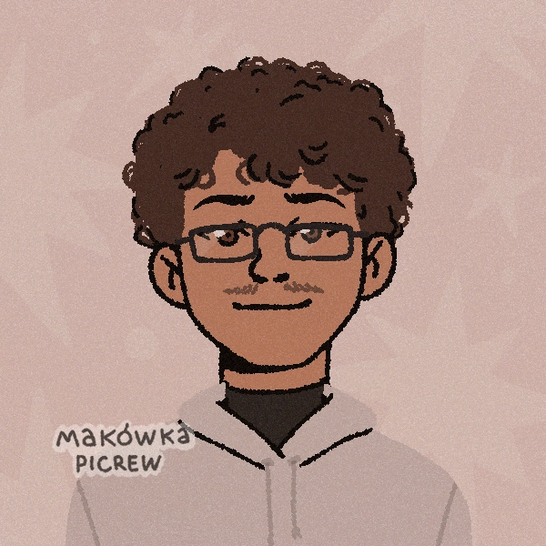
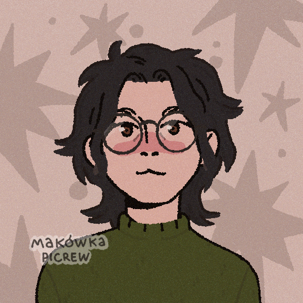
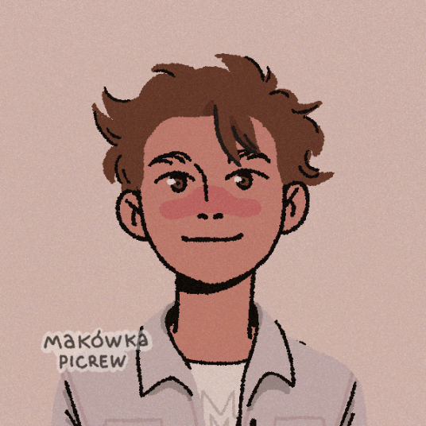

Sobre nós:
Quem somos?

Kauã Henrique
Nosso coordenador de Projeto. Bom em incentivar a equipe e sempre animado para uma boa causa.
"Quem tem um porquê enfrenta quase qualquer como.”

Lavínnia W. B. de Oliveira
Especialista em HTML e CSS, coloca sua paixão em tudo em que faz e está sempre disposta a aprender com seus erros.
"Se nós esperarmos até estarmos prontos, esperaremos a vida inteira.”

Vitor Pecoraro
Cuidou da identidade visual, adora usar sua criatividade para contribuir com as pessoas.
"Eu entendi que a vida está nas pequenas coisas."
Nossa missão:
Nosso grupo escolheu o tema preservação do meio ambiente porque acreditamos que ele é extremamente importante para a sociedade e para o futuro do planeta. Percebemos que, apesar de sua relevância, muitas vezes esse assunto não recebe a atenção necessária. Por isso, decidimos abordá-lo para conscientizar as pessoas sobre a importância de preservar os recursos naturais, reduzir a poluição e contribuir para um mundo mais sustentável.
Esperamos gerar um impacto de conscientização, fazendo com que as pessoas reflitam sobre suas atitudes em relação ao meio ambiente. Queremos incentivar pequenas mudanças no dia a dia, como economizar água, reciclar, descartar o lixo corretamente e preservar a natureza, mostrando que cada ação individual pode contribuir para um futuro mais sustentável.
O problema em números: Áreas desmatadas dos anos 90 aos 2000
| Ano | Tamanho de área desmatada | ||
|---|---|---|---|
| 1990 | 550,00 km² | ||
| 1991 | 380,00 km² | ||
| 1992 | 400,00 km² | ||
| 1993 | 482,00 km² | ||
| 1994 | 482,00 km² | ||
| 1995 | 1.208,00 km² | ||
| 1996 | 433,00 km² | ||
| 1997 | 358,00 km² | ||
| 1998 | 536,00 km² | ||
| 1999 | 441,00 km² | ||
| 2000 | 547,00 km² | ||
| Fontes: MapBiomas | |||
Linha do tempo:
- 1972 – Conferência de Estocolmo (Suécia): Primeiro grande encontro mundial sobre questões ambientais, promovido pela Organização das Nações Unidas (ONU). Marcou o início da cooperação internacional para a proteção do meio ambiente.
- 1987 – Relatório Brundtland: Publicação do relatório Nosso Futuro Comum, que popularizou o conceito de desenvolvimento sustentável, definido como o desenvolvimento que atende às necessidades do presente sem comprometer as gerações futuras.
- 1992 – Conferência das Nações Unidas sobre Meio Ambiente e Desenvolvimento (ECO-92): Realizada no Rio de Janeiro, reuniu líderes de diversos países para discutir soluções para os problemas ambientais e resultou na criação da Agenda 21 e de importantes acordos internacionais.
- 1997 – Protocolo de Kyoto: Tratado internacional que estabeleceu metas para reduzir a emissão de gases de efeito estufa pelos países desenvolvidos.
- 2015 – Acordo de Paris: Assinado por quase todos os países do mundo durante a COP21, estabeleceu o compromisso de limitar o aumento da temperatura média global e fortalecer as ações de combate às mudanças climáticas.
- 2022 – COP27 (Egito): Os países avançaram em discussões sobre financiamento para perdas e danos causados pelas mudanças climáticas, especialmente em nações mais vulneráveis.
- 2023 – COP28 (Emirados Árabes Unidos): Pela primeira vez, a conferência aprovou um texto que incentiva a transição para longe dos combustíveis fósseis, reforçando a necessidade de reduzir as emissões de gases de efeito estufa.